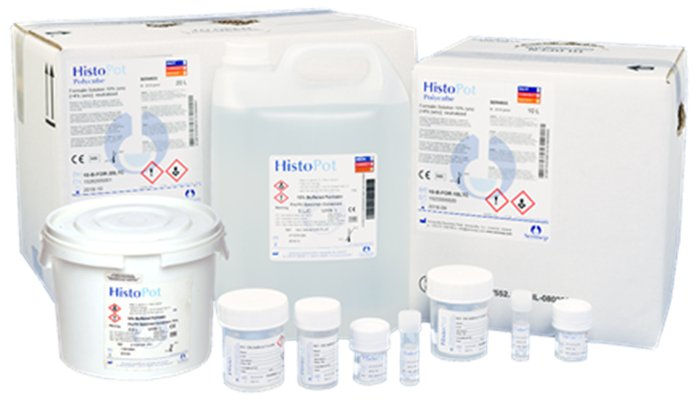
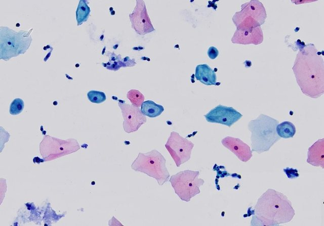
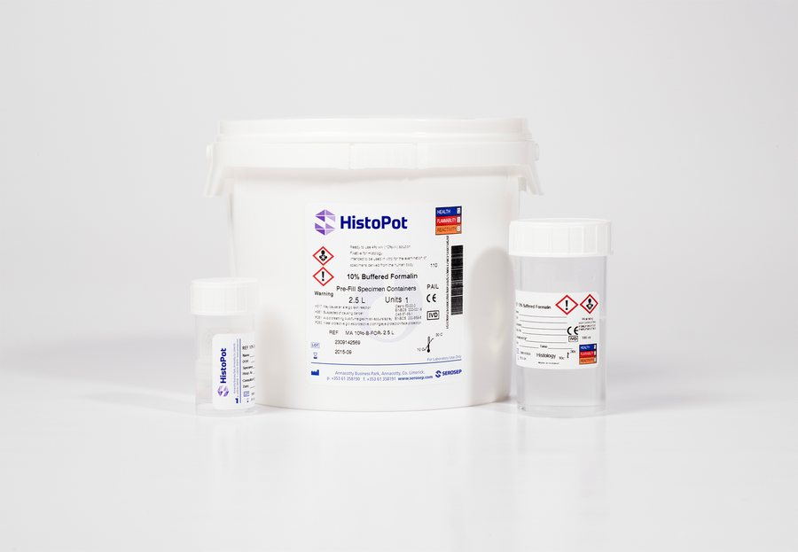

Bộ hóa chất LBC
Xét nghiệm tế bào học
Hệ thống kỹ thuật Liqui-PREP® chuẩn bị mẫu tế bào học nhúng dịch, kèm bộ dụng cụ thu mẫu chuyên dụng.
Xem kỹ thuật Liqui-PREP®Công ty TNHH Trang thiết bị y tế Vạn Hưng (Van Hung Medical Equipment Co., Ltd.) là nhà cung cấp giải pháp toàn diện về trang thiết bị, hóa chất và vật tư xét nghiệm Giải phẫu bệnh – Tế bào học.

Chúng tôi tự hào luôn đồng hành cùng Quý Bác sĩ trong sứ mệnh giúp hàng triệu chị em phụ nữ Việt Nam phòng ngừa ung thư phụ khoa. Gần 17 năm qua, sự đồng hành này đã được tín nhiệm và ghi nhận.
Công ty hoạt động từ năm 2010 tại Phường Chánh Hưng (Phường 4, Quận 8 cũ), TP.HCM. Chúng tôi nhập khẩu và phân phối hóa chất, thiết bị, dụng cụ phục vụ chẩn đoán và xét nghiệm.
Khách hàng là bệnh viện, phòng khám đa khoa và trung tâm xét nghiệm. Vạn Hưng cam kết hồ sơ nguồn gốc, hướng dẫn lắp đặt và hỗ trợ sau bán.
Sản phẩm nhập khẩu độc quyền, có hồ sơ nguồn gốc.
Dưới sự hỗ trợ của đội ngũ bác sĩ đầu ngành và kỹ thuật viên chuyên môn cao.
Đáp ứng hàng hóa nhanh chóng và kịp thời.
Luôn đặt mục tiêu vì sức khỏe cộng đồng lên hàng đầu.
Vạn Hưng cung cấp hóa chất Pap nhúng dịch Liqui-PREP®, hóa chất HPV DNA công nghệ HC2, bộ thu mẫu tế bào học, bộ FNA và bộ hóa chất tuyến giáp, phục vụ lab, bệnh viện, phòng khám và phòng mạch tư.
Hệ thống kỹ thuật Liqui-PREP® chuẩn bị mẫu tế bào học nhúng dịch, kèm bộ dụng cụ thu mẫu chuyên dụng.
Xem kỹ thuật Liqui-PREP®
Hóa chất HPV DNA công nghệ HC2, dùng được trên phần mẫu nhúng dịch còn lại.

Dung dịch cố định mô học đóng gói tiện lợi, giảm thao tác với hóa chất độc hại.
Xem HistoPotXem nhu cầu khoa phòng, ngân sách và tiêu chuẩn kỹ thuật.
CO/CQ, catalogue, điều kiện bảo hành và tiến độ giao hàng.
Vận chuyển TP.HCM và toàn quốc, hướng dẫn kỹ thuật tại chỗ.
Phụ kiện, hiệu chuẩn và hỗ trợ sau triển khai.
Công ty TNHH Trang thiết bị y tế Vạn Hưng hân hạnh và biết ơn Quý Thầy Cô, Quý anh chị y bác sĩ đã tín nhiệm Liqui-PREP®.
Liqui-PREP® thế hệ thứ hai dùng chất bảo quản tế bào, chất làm sạch mẫu và chất kết nang. Tế bào cổ tử cung không chồng lấp, quan sát rõ dưới kính hiển vi sau khi ly giải chất nhầy và loại hồng cầu.

Cùng một loại mẫu, khác nhau ở cách tế bào được dàn lên lam.


Vạn Hưng hân hạnh đồng hành cùng các bệnh viện, phòng xét nghiệm và cơ sở y tế nâng cao chất lượng chẩn đoán cận lâm sàng bằng các giải pháp công nghệ đạt chuẩn quốc tế.
Dựa trên kết quả nghiên cứu và đánh giá lâm sàng của Nadereh Behtash, Zeinab Narari và cộng sự (2008)[1] và Joonseok Park và cộng sự (2007)[2].
| Liqui-PREP® | Phết thường quy | |
|---|---|---|
| ASC-US | 6,5 | 2,8 |
| ASC-H | 0,24 | 0,09 |
| LSIL | 1,55 | 0,50 |
| HSIL | 0,4 | 0,2 |
| Lam không đạt yêu cầu | 0,02 | 0,05 |
Xét nghiệm Pap nhúng dịch Liqui-PREP® có tỷ lệ LSIL và HSIL cao hơn (p < 0,001).
| Nghiên cứu | Cỡ mẫu | Thường quy | Nhúng dịch Liqui-PREP® | ||
|---|---|---|---|---|---|
| LSIL | HSIL | LSIL | HSIL | ||
| Park J., 2009. Đoàn hệ, Hàn Quốc | TQ 218.548; Liqui-PREP® 26.176 | 0,5% | 0,25% | 1,4% | 0,39% |
| Canda M.T., 2009. Đoàn hệ, Thổ Nhĩ Kỳ | TQ 2.000; Liqui-PREP® 4.000 | 1,4% | 0,20% | 2,25% | 0,25% |
| Deshou H., 2009. Đoàn hệ, Trung Quốc | TQ 31.500; Liqui-PREP® 31.500 | 0,41% | 0,28% | 1,80% | 0,58% |
| Rangdaeng S., 2007. Chia đôi mẫu, Thái Lan | TQ 1.030; Liqui-PREP® 1.030 | 1,8% | 1,9% | 2,4% | 2,3% |
Xét nghiệm Pap tiêu chuẩn, định kỳ, góp phần phòng ngừa ung thư cổ tử cung hiệu quả.
Gửi Quý bác sĩ và cán bộ y tế phòng khám sản phụ khoa. Quy trình thu mẫu tế bào cổ tử cung kỹ thuật Pap công nghệ Liqui-PREP.

Lưu ý. Broom Cervex, Spatula và Cytobrush là dụng cụ thu mẫu tế bào cổ tử cung chỉ dùng một lần, không tái sử dụng. Không dùng dụng cụ khi bao bì bảo quản đã bị rách. Chỉ người có trình độ chuyên môn phù hợp mới được sử dụng.
Chống chỉ định. Không sử dụng dụng cụ cho bệnh nhân trong thai kỳ.
Ghi chú. Không thu mẫu khi bệnh nhân đang có kinh. Hai ngày trước khi xét nghiệm không được thụt rửa, không nên giao hợp trong vòng 24 giờ.
Mẫu được bảo quản trong dung dịch. Lab ly giải chất nhầy, làm sạch hồng cầu rồi dàn tế bào lớp mỏng trên lam. Quan sát nhân và bào tương rõ hơn, hỗ trợ tăng độ nhạy và giảm lam không đạt so với phết khô.
Nhúng hoặc để đầu chổi trong lọ dung dịch bảo quản, đậy kín, ghi họ tên. Gửi cả lọ đến phòng xét nghiệm, không phết lam tại bàn khám như Pap thường quy.
Tùy quy trình lab. Mẫu nhúng dịch thường cho phép dùng phần còn lại để xét nghiệm HPV DNA công nghệ HC2. Ghi rõ trên phiếu nếu cần làm đồng thời Pap và HPV.
Đối tác phòng mạch tư có thể gửi mẫu Pap nhúng dịch Liqui-PREP® đến Bệnh viện Từ Dũ, Trung tâm Y khoa Medic hoặc Phòng xét nghiệm y khoa MedPaDiag. Vạn Hưng hướng dẫn hóa chất và quy trình gửi mẫu.
Xét nghiệm Pap là một xét nghiệm rất đơn giản để tìm những biến đổi bất thường của tế bào cổ tử cung. Vì những biến đổi này có thể đưa đến ung thư.

Cần được quan tâm và mở rộng chương trình tầm soát để góp phần phòng ngừa ca mắc mới.
Hướng dẫn quốc gia về dự phòng và kiểm soát ung thư cổ tử cung giai đoạn 2026–2035. Phác đồ 1: sàng lọc dựa vào xét nghiệm tế bào cổ tử cung.
Nguyên nhân chính là nhiễm virus HPV nguy cơ cao kéo dài, nhất là típ 16 và 18. Nguy cơ tăng nếu quan hệ sớm, nhiều bạn tình, hút thuốc, suy giảm miễn dịch. Pap và HPV DNA giúp phát hiện tổn thương tiền ung thư trước khi thành ung thư.
Tiêm vắc-xin HPV theo lịch, sàng lọc định kỳ bằng Pap và/hoặc HPV DNA, điều trị sớm tổn thương tiền ung thư. Kết hợp không hút thuốc và quan hệ an toàn. Vắc-xin không thay thế xét nghiệm Pap.
Không lấy mẫu lúc đang hành kinh. Trong 24–48 giờ trước: không giao hợp, không đặt thuốc âm đạo, không thụt rửa. Không bôi gel bôi trơn vào mỏ vịt khi lấy mẫu.
Chẩn đoán dựa trên hệ thống Bethesda 2014: đủ mẫu hay không; NILM; ASC-US; ASC-H; LSIL; HSIL; tế bào tuyến bất thường (AGC); nghi ung thư. Thời gian trả kết quả do từng lab quy định.
Vạn Hưng cung cấp hóa chất xét nghiệm, không trực tiếp điều trị. Bác sĩ sản phụ khoa chỉ định soi cổ tử cung, sinh thiết và chuyển tuyến. Bệnh viện thường nhận điều trị: Bệnh viện Ung Bướu TP.HCM, Bệnh viện Từ Dũ, Bệnh viện Phụ sản Trung ương, Bệnh viện Đại học Y Dược TP.HCM và các bệnh viện sản phụ khoa.
Gọi trong giờ hành chính hoặc gửi yêu cầu. Ghi rõ đơn vị, loại hóa chất hoặc bộ thu mẫu và số lượng.
Dung dịch cố định mẫu sinh thiết tiêu chuẩn, đóng gói tiện lợi và không mùi. Điều trị đúng đích bắt nguồn từ chẩn đoán chính xác.

Các dung dịch như formalin giúp bảo quản mô trong thời gian dài mà không bị phân hủy, giữ nguyên cấu trúc và hình thái của mô để có thể nghiên cứu sau này.
Dung dịch bảo quản ngăn chặn hoạt động của vi khuẩn và enzyme, làm chậm hoặc dừng quá trình phân hủy tự nhiên của mô.
Một số dung dịch bảo quản giúp giữ lại các đặc tính sinh học của mô như kháng nguyên, DNA và RNA. Điều này rất quan trọng cho các nghiên cứu về sinh học phân tử và miễn dịch học.
Trong y học, việc bảo quản mô chất lượng cao là cần thiết để đảm bảo kết quả chẩn đoán chính xác, đặc biệt trong giải phẫu bệnh và ung thư học.
Làm việc trong môi trường độc hại đòi hỏi sự cảnh giác và tuân thủ các biện pháp an toàn để bảo vệ sức khỏe. Lao động trong môi trường độc hại có thể phòng tránh, và HistoPot góp phần an toàn khi sử dụng.
Hiểu rõ các chất độc hại. Mỗi loại hóa chất hoặc chất thải có mức độ độc hại khác nhau, nên cần nắm MSDS (Material Safety Data Sheets) của chúng.
Dùng đúng PPE gồm găng tay, khẩu trang, kính bảo hộ, áo choàng và giày bảo hộ, phù hợp với loại chất độc đang làm việc.
Môi trường làm việc cần có hệ thống thông gió để loại bỏ hơi độc hại. Làm việc trong tủ hút khí khi có thể.
Với hóa chất, đặc biệt là formalin, tuân thủ quy định về sử dụng, lưu trữ và xử lý, và dùng tủ hút khí để giảm nguy cơ hít phải hơi độc hại.
Có sẵn phương tiện và quy trình xử lý ngay sự cố tràn đổ hóa chất.
Thông gió tốt, đặc biệt ở khu vực xử lý mẫu, để loại bỏ khí độc và mùi hôi.
Phân khu làm việc rõ ràng, từ khu nhận mẫu đến khu xử lý và khu đọc kết quả, để luồng di chuyển hợp lý.
Tuân thủ quy trình chuẩn về xử lý mẫu, bảo quản, nhuộm và phân tích để giảm thiểu rủi ro.
Khử trùng bề mặt, dụng cụ và thiết bị thường xuyên.
Toàn bộ nhân viên được đào tạo về quy trình an toàn liên quan đến hóa chất, sinh học và xử lý mẫu, và tham gia đào tạo liên tục để cập nhật kiến thức.
Chất thải y tế, đặc biệt là chất thải nguy hại từ formalin và mẫu sinh học, phải được phân loại, thu gom và xử lý đúng cách theo quy định của Bộ Y tế và các quy định về quản lý chất thải nguy hại.
Làm việc theo đúng các quy định về an toàn lao động, sức khỏe và môi trường của Việt Nam.
Môi trường làm việc an toàn, năng suất cao.
Vạn Hưng đồng hành cùng các hội nghị y học và chương trình đào tạo liên tục cùng Quý Bác sĩ.
Các hoạt động Vạn Hưng tham gia hằng năm, giai đoạn 2023–2026.
| Chương trình | 2023 | 2024 | 2025 | 2026 |
|---|---|---|---|---|
| Hội nghị khoa học thường niên GPB | ||||
| Hội nghị sản phụ khoa, Bệnh viện Trung ương Huế | ||||
| Tuần lễ đào tạo liên tục, Bệnh viện Đại học Y Dược | ||||
| Hội nghị khoa học thường niên HOSREM |